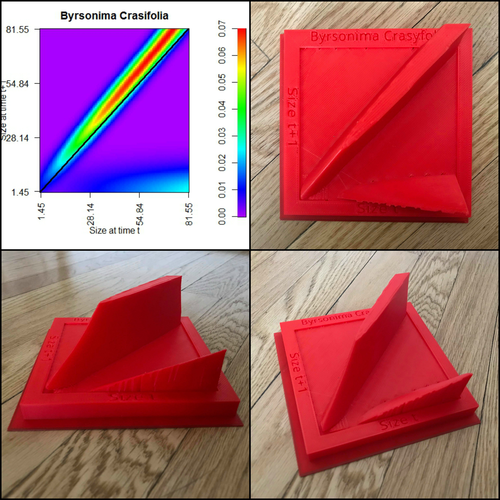

|
Fragmented landscape This drawing represents the different areas where my Ph.D. dissertation was developed. We have some secondary forest
in the middle of the drawing, some pastures with some recruitment on the sides and a road on the left side. In the drawing we can see trees at different demographic stages. The trees are based on true
tree species including Byrsonima crassifolia, Astronium graveolens, calycophyllum candidissimum, Cedrela odorata and enterolobium cyclocarpum
|
 |
Darwin's flower and its moth This drawing was from a fun project where I designed a book about
Orchids in the natural park "Alto Tajo".
|
|  |
3D printing of an integral projection model (IPM) Integral projection models are stage-based population models.
This kind of model allows testing for the effect of different variables in the population dynamics.
Because it is stage-based, it also identifies what stages are the most crucial for population growth.
The output of an IPM looks like the graph of the top corner of this image. We thought that printing that chart in
3D will provide a sharper view of how fast the survival and growth rate change with size.
|
 |
Spatial structure of a plant neighborhood This drawing illustrates how the seedling in the center
of the plot experiences a range of plant-plant interactions, depending on the neighbor’s species identity,
plant size, and physical distance. I used it as the first figure in the introduction to a
plant interaction
modeling Stan Case Study.
|
{kind=link}